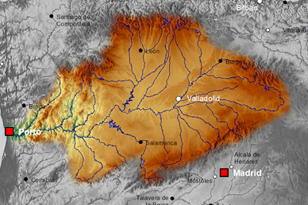

NORMATIVA
- La pesca de la trucha en los tramos considerados trucheros en la comunidad de Castilla y León se abre a primeros de abril, y termina a finales de agosto.
- La pesca en los tramos de río trucheros se podrá pescar truchas, pero se podrán pescar sin muerte. Solo se permiten capturar sin devolver la trucha en dos casos. Los AREC y los cotos de pesca.
- AREC: Petición de pases de control de pesca en aguas en régimen especial controlado. Este permiso se obtendrá gratuitamente a través de la web de Servicios de Pesca de la Junta de Castilla y León. Este permiso sólo se concede a un número limitado de pescadores y se puede pescar dos truchas por personas.
- Coto de Pesca: Permiso para pescar aguas de régimen especial controlado. La diferencia entre el AREC,es que este permiso se obtiene pagando a través de la web de Servicios de Pesca de la Junta de Castilla y León. Se concede a un número más limitado de pescadores que en el anterior permiso. Pero se permite la captura de cuatro truchas.
- Los tipos de pesca también son importantes. Ya que la pesca sin muerte no permite la pesca con cebo natural, solo con señuelos artificiales con un solo arpón, y ese arpón tiene que estar sin muerte.
- En la pesca de los AREC y los cotos de pesca tampoco se permite la pesca con todo tipo de cebos naturales. Dependiendo del tramo del río hay que mirar en la normativa vigente los cebos naturales permitidos.
- Queda totalmente prohibida la pesca con ninfas utilizando plomada, también queda prohibida la pesca con pez vivo.
ÚLTIMAS NOTICIAS
Pantano de Selgas. León León, paraíso para la pesca de la trucha en familia.
La pesca de la trucha en la provincia de León es un referente, y hace que nos visiten aficionados de otras comunidades.
En los ríos de León la mejor época para la pesca de Lucio es en febrero.
Este pez en esas fechas tiene actividad, además de que en febrero la pesca en ríos trucheros se encuentra cerrada.
Un joven leonés pesca una trucha de 2,4 kilos y 64 centímetros en el río Porma.
El pescador capturó la trucha el pasado sábado, este ejemplar es el más grandes vistas en los últimos años, y la caputura de esta trucha fue el primer día de la temporada de pesca 2019 en la Provincia de León.
Los cursos bajos de los ríos del Esla y del Órbigo ofrecen buenas condiciones para pescar de la trucha. En aguas trucheras no pueden capturarse y llevar para casa.
Los embalses son una alternativa de pesca a principio de temporada.
En esta época del año la situación de los ríos no es la más adecuada para la pesca. Ya que los ríos bajan con mucha agua. Además ese agua es fría debido al deshielo en la montaña.
El desvío de aguas para las presas de la zona del Torío, hace que algunos tramos aparecen sin caudal, ni siquiera el mínimo ecológico.
Por este motivo se quejan muchos ecologistas y pescadores.
El Porma, río donde se concentran muchos jóvenes pescadores.
Un pescador con sólo 20 años, Víctor Robles, de Boñar, la pesca es una de sus afición y el pasado domingo pescó una trucha de 3,3 kilos la pesca sin muerte, y la trucha fue devuelta al agua del río.